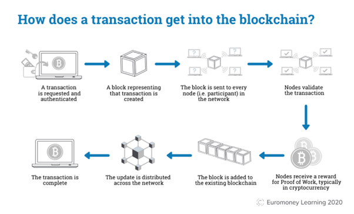

What does it do?
Blockchain is a system of recording digital information in blocks where the information is highly secure and cannot be changed or hacked. Blockchains are distributed across a network making them even more secure as they are verified by all users on the network. Each block is individually encrypted and timestamped and each time a block is added to a blockchain it contains the identity of the previous block. If a block is changed then the reference to following blocks is lost and the block is invalid. Blockchain technology has revolutionised the way the financial industry works as the technology is fundamental to cryptocurrency.
Cryptocurrency is a digital or virtual form of decentralized peer to peer currency that is not limited by national currencies which are legislated. It is almost impossible to counterfeit or double spend cryptocurrency. It does not have a set value it is simply worth what people are willing to pay for it. Consumers can make payments directly to each other through an online system which uses cryptography to ensure secure transactions. (3) Cryptocurrency values have been volatile over the past few years and because of this there has been a lot of interest in buying them for speculative purposes to make a profit. The most popular cryptocurrencies are Bitcoin and Ether.
